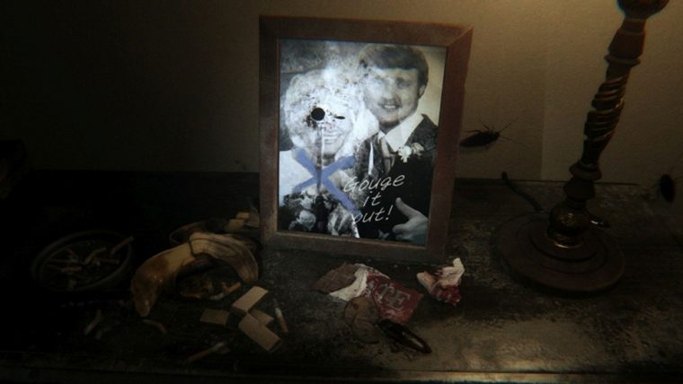

NERD NEWS

ENTRE OS HERÓIS SEM SUPERPODERES
“Viúva Negra vence todos”, diz Neil de Grasse
Tyson sobre luta entre super-heróis.

ACABE COM O TÉDIO
9 jogos para escapar do mundo real.

AI SIM!
"P.T. foi um experimento, ainda quero criar um
jogo de terror revolucionário", diz Kojima.

VALE TUDO